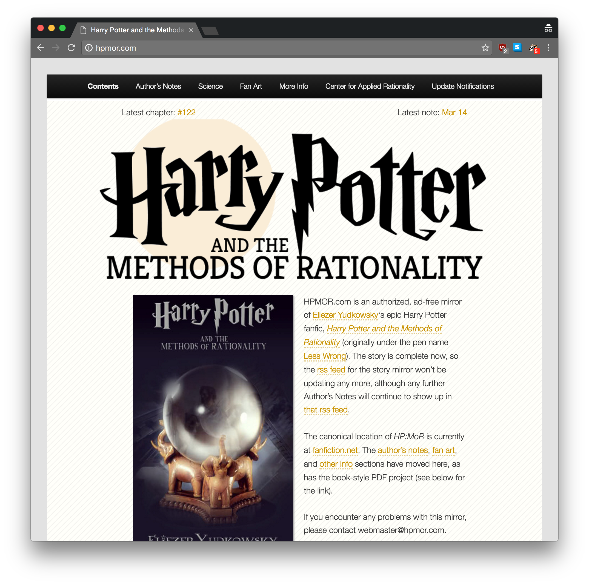
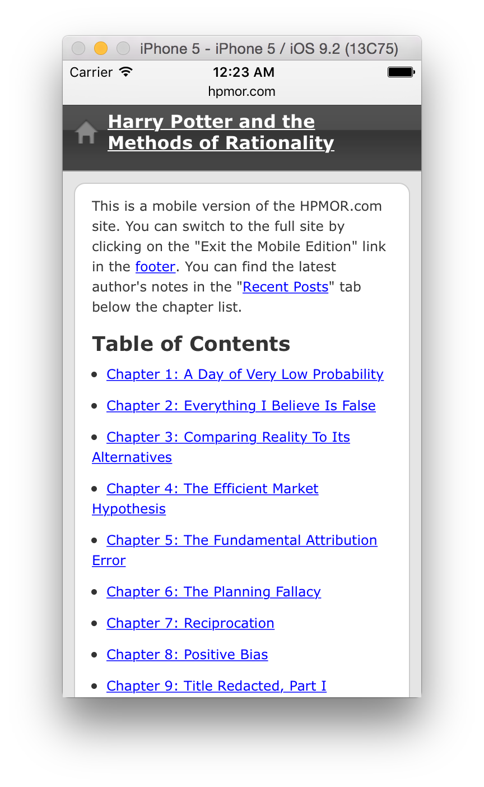

Plugins
The only sort of plugin solutions I'm aware of are thing like WP Mobile Edition that load a fully separate theme for mobile browsers.
Downside of this approach: They don't work for narrow desktop browsers.
Let's use an example: hpmor.com.
What does this site look like on, say, an iPhone?
Wow, that looks like an entirely different theme. Okay, how does it look in a just-as-narrow desktop browser?
While this site adapts to different devices, it's not reponsive. A truly responsive site would work at the same widths on any device.
hpmor.com uses a plugin called WP Mobile Editions, originally by CrowdFavorite. There are a lot of dead links when talking about the plugin, since CrowdFavorite appears to have ended support for the plugin after being bought. There's still a plugin under the same name, WP Mobile Edition in the WordPress.org Plugin Directory, which you're welcome to check out.
Remember the risks of serverside device detection: